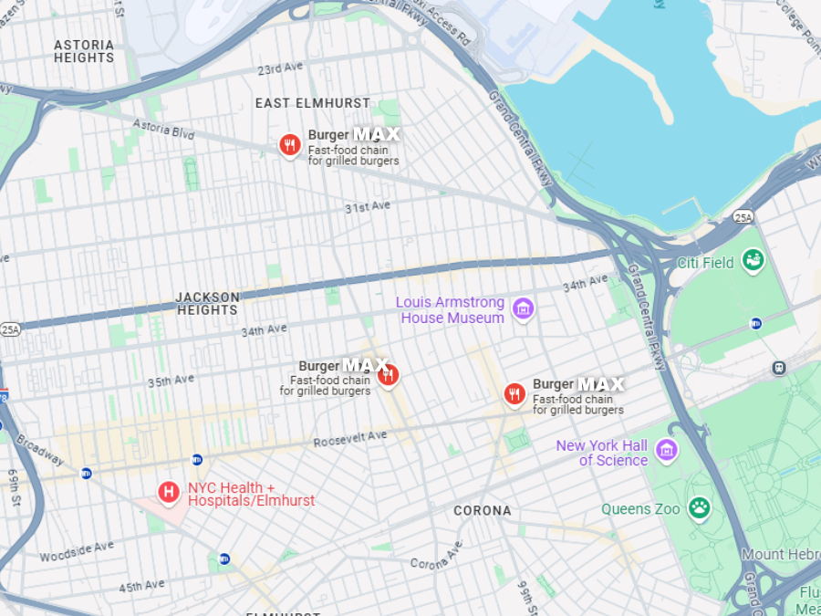
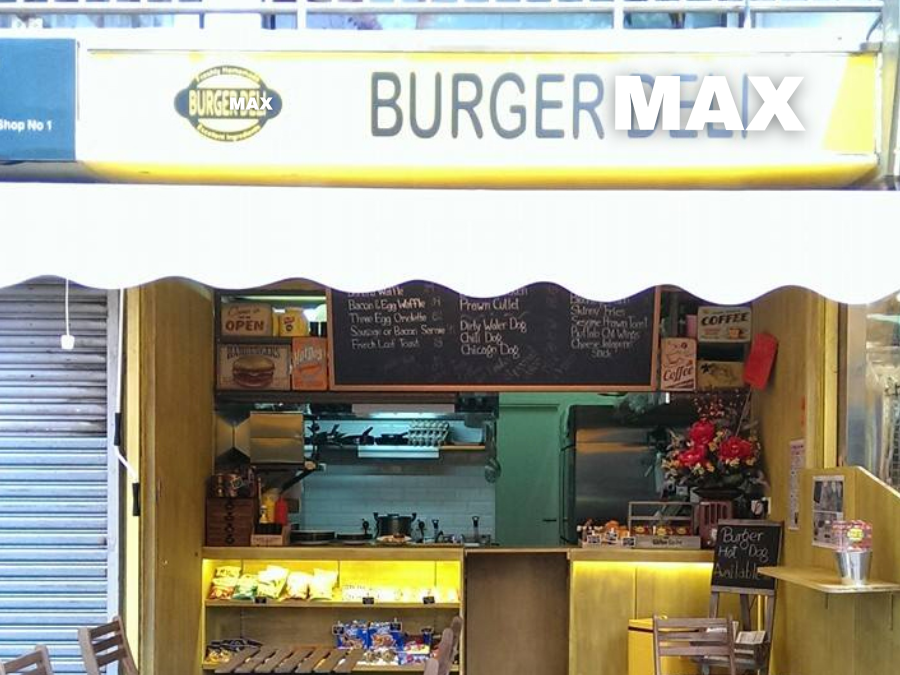

About Us
At Burger Max, we believe in delivering the ultimate burger experience—where bold flavors meet fresh ingredients and quality is never compromised.
Welcome to Burger Max, where every bite is maxed out on taste!
Our journey started with a simple goal: to craft mouthwatering burgers that satisfy every craving. From our signature Max Stack to our crispy Waffles & Chicken, each item on our menu is made with passion and precision. Whether you're dining in, grabbing takeout, or ordering for a feast, we promise a meal that’s juicy, flavorful, and unforgettable.
Burger Max History
What started as a small burger joint quickly gained a loyal following, and today, Burger Max has expanded into several countries, bringing its signature flavors to burger lovers worldwide. With locations across North America, Europe, Asia, and beyond, we continue to serve up delicious, high-quality meals while staying true to our roots. Whether you’re grabbing a quick bite on the go or sitting down for a feast, our goal remains the same: to deliver bold flavors, unbeatable quality, and an unforgettable burger experience—every time.